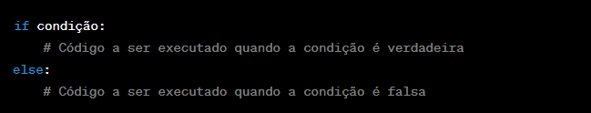
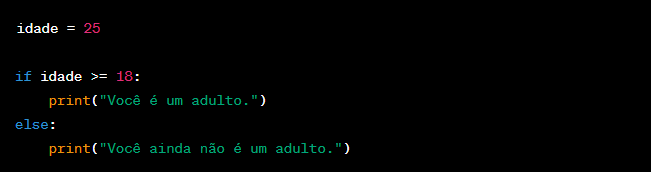
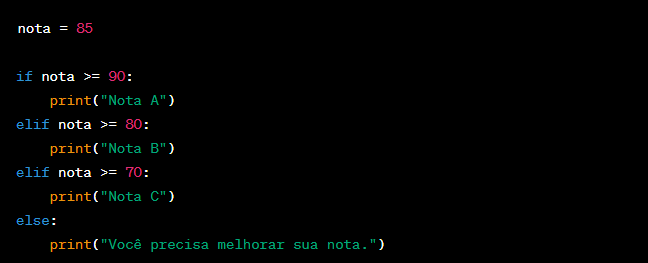

Em Python, if e else são estruturas de controle que permitem executar diferentes blocos de código com base em
certas condições. Essas declarações são essenciais para implementar lógica condicional em seus programas.
A sintaxe básica para as declarações if e else em Python é a seguinte:

Veja como funciona:
A instrução if é usada para definir uma condição. Se a condição for avaliada como True (verdadeira), o bloco
de código indentado sob a instrução if será executado. Se a condição for False (falsa),
o bloco de código sob a instrução else (se presente) será executado em vez disso.
A instrução else é opcional. Ela é usada para especificar o bloco de código que deve ser executado quando a
condição na instrução if for False.
Aqui está um exemplo simples:

Neste exemplo, se o valor de idade for maior ou igual a 18, o programa imprimirá "Você é um adulto."
Caso contrário, imprimirá "Você ainda não é um adulto."
Você também pode estender as instruções if e else com condições adicionais usando elif (uma contração de "else if")
para criar estruturas de decisão mais complexas:

Neste exemplo, o programa determinará a nota com base no valor da variável nota e imprimirá a mensagem correspondente.
Lembre-se de que a indentação adequada é crucial em Python, pois indica o bloco de código associado a cada declaração.
Geralmente, são usados quatro espaços ou uma tabulação para a indentação.